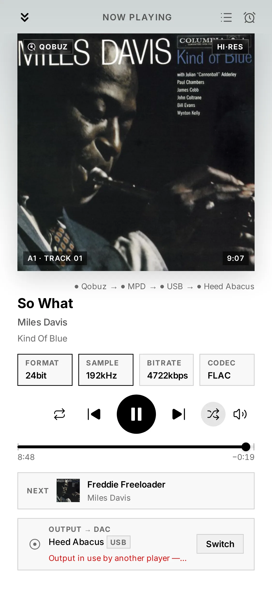
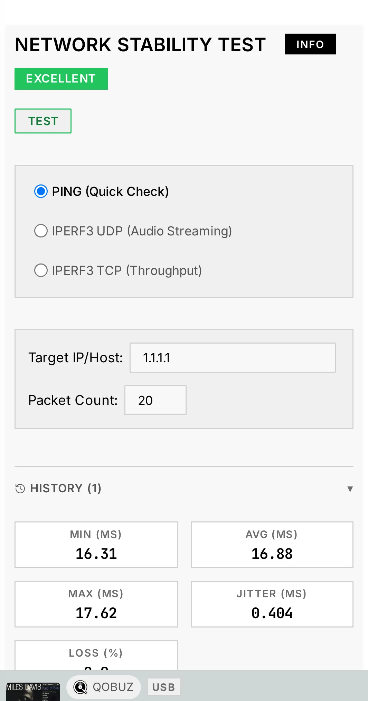

9. Troubleshooting
Most issues come down to a service that isn't running, an output that points at the wrong device, or a network hop that's flaky. Audiogravity surfaces all three in the interface.
No sound / wrong output
Read the message first. Audiogravity now tells you why a track will not play, as a notification and under the output in the fullscreen player. Start there — the answer is usually on screen:
- "Output in use by another player" — your sound card is exclusive (that is what makes bit-perfect playback possible), so only one player can hold it at a time. Stop the other one — often HQPlayer: turn its Use as output switch off and the card is released (see 6. Outputs & engines).
- "its network audio daemon (NAA) is not running" — HQPlayer is your output but the piece that feeds your DAC is stopped. Start it in Services, or turn the switch off to play locally.
- "which HQPlayer cannot decode" — the track's format is not one HQPlayer handles (AAC, ALAC, M4A/MP4, OGG/Opus, APE, WMA, DST, AC3/E-AC3, DTS, Musepack, TAK, TTA, Shorten, Speex, AMR, MKA/WebM, AIFC); the message names it. M4A and MP4 are the same container under two names — media servers disagree on which to publish — so the same file may be named either way depending on where you browsed it. Turn the switch off to play it on the local output. A whole album is refused if any of its tracks is in such a format — the message names that track — so you get one clear answer instead of music stopping partway through.
- "Both HQPlayer and a network renderer are selected" — pick one.
- "The speaker you selected is not answering" — the renderer is asleep, off the network, or still reconnecting. Wake it up, or pick another output. Audiogravity refuses rather than playing out of the local DAC behind your back.
- "says it is playing but its position is not moving" — HQPlayer accepted the track and reports playing, but nothing is coming out: the sound card is held elsewhere. Same fix as the first entry.
- "accepted the track but never started playing it" — either the sound card is busy, or HQPlayer cannot decode that format.
A message can arrive a few seconds after you press play. Whether sound really came out of HQPlayer cannot be known instantly — a heavy chain takes time to start. Playback begins immediately and the check runs behind it, so a problem shows up under the output shortly after, not at the moment of the tap. It clears on its own as soon as the music plays.

If nothing is displayed:
- Check the output selector — is the right destination (Local DAC vs a network renderer) selected?
- In Config, confirm the service's audio output badge points at your DAC. If the card index drifted after a hardware change, re-run Guided → output (the DAC index is normally pinned automatically — see 3. First run).
- In Services, confirm the relevant service (mpd, shairport-sync…) is RUNNING.
My DAC is not in the output list (Raspberry Pi HAT)
A HAT — a DAC board stacked on the Pi's GPIO header (HiFiBerry, IQaudIO, Allo,
Pi-DAC…) — is not plug-and-play the way a USB DAC is. Linux creates a sound card for it
only once /boot/firmware/config.txt names its device-tree overlay. Until then the
board is invisible to the entire system, and no setting in Audiogravity can reveal
it: the output list mirrors the sound cards Linux exposes, nothing more. This is a
one-time manual step, and it is the same on every Pi-based music player.
Why is it not automatic? The HAT standard lets a board carry a small memory chip describing itself, which the Pi's firmware reads at boot and acts on with no configuration at all. Many audio HATs ship that chip blank, so there is nothing to read — and the board's own chips sit on a bus that stays powered off until an overlay declares it. Nothing can be probed before the declaration exists.
1. Confirm the board really is missing. Over SSH, or in the browser Terminal (System tab, admin):
cat /proc/asound/cards
If your DAC is not in that list, this section applies. If it is listed, the problem lies elsewhere — go back to No sound / wrong output.
2. Find the overlay name for your board. Every Raspberry Pi OS image ships the full catalogue — around forty audio boards — and your kernel version, because some vendors changed their overlay names at kernel 6.1.77:
grep -iE "^Name:.*(hifiberry|iqaudio|allo|dac|digi|audio)" /boot/firmware/overlays/README
uname -r
Cross-check the name against your manufacturer's own documentation. HiFiBerry, for
instance, publishes one line per board and splits it by kernel version: a DAC+ Pro /
DAC2 Pro takes hifiberry-dacplus below 6.1.77 and hifiberry-dacplus-pro at or
above it — the wrong one still produces sound, but drives the clock from the Pi instead
of the board's own oscillators, which is precisely what you paid the Pro version for.
3. Declare the board, then reboot.
# Back the file up first — a broken boot file leaves the box unreachable
sudo cp /boot/firmware/config.txt /boot/firmware/config.txt.bak-$(date +%F)
sudo nano /boot/firmware/config.txt
Make three changes at the top of the file, before the first […] line — settings
placed after one apply only to that model of Pi:
| Change | Line | Effect |
|---|---|---|
| Required | dtoverlay=hifiberry-dacplus-pro (your board's line) |
Declares the DAC |
| Recommended | dtparam=audio=on → dtparam=audio=off |
Turns the Pi's own headphone jack off |
| Optional | dtoverlay=vc4-kms-v3d → dtoverlay=vc4-kms-v3d,noaudio |
Turns HDMI audio off |
The last two are not cosmetic: with the jack and both HDMI outputs still active, your DAC is one candidate among four and Audiogravity will not presume which one you meant. Silence them and it selects your DAC on its own. Skip them only if you actually use the jack or HDMI sound.
Then reboot:
sudo reboot
4. Verify, then point Audiogravity at it.
aplay -l
Your DAC should now be listed — under its real name, HiFiBerry DAC+ Pro and the like,
not a generic label. Back in the interface, run Guided → output (see
3. First run) and pick it: that is the step that writes the output
into each service's configuration. Detection alone routes nothing.
If nothing appears after the reboot, the board is declared but not answering. Check that it is fully seated on the header, and — a documented quirk on some installs — try adding
force_eeprom_read=0to the same file.If the box does not come back on the network, the boot file is at fault. Power it off, read the SD card on another computer, and rename your
config.txt.bak-…back toconfig.txt. This is why step 3 starts with a backup.
On an older image, this file lives at
/boot/config.txtinstead. Recent Raspberry Pi OS releases leave a stub there pointing to the new location — if you open it and it says the file has moved, follow it.
A service won't start
- Open Services → click the service name for its detail modal (live metrics + the session action history), then restart it.
- If a Systemd tuning override made it unstable, use Restore Backup or Remove Override on the Systemd tab to roll it back to factory behaviour instantly.
- For deeper output, use the browser Terminal (System tab, admin) — e.g.
systemctl status mpd/journalctl -u mpd -e.
Streaming fails or a track won't play
- Confirm the service is Connected in Library → Sources, and that your subscription covers Hi-Res (see 5. Library & streaming).
- A track that played before but fails later is usually an expired streaming link — Audiogravity refreshes these automatically; retry the track.
- HIGHRESAUDIO allows a single active device — if it signed out, reconnect.
- With HQPlayer as your output, streaming services are refused on purpose, and so is anything in a format it cannot decode (AAC, ALAC, M4A/MP4, OGG/Opus, APE, WMA, DST, AC3/E-AC3, DTS, Musepack, TAK, TTA, Shorten, Speex, AMR, MKA/WebM, AIFC) — wherever it comes from: your library, a media server or a radio station. Audiogravity names the reason. Turn Use as output off to play them locally (see 6. Outputs & engines).
Casting to a renderer stalls
- Check the renderer is reachable on the LAN and appears in the output selector.
- Network renderers depend on your local network — run the Network Test (Performance tab) to check jitter/loss.

A UPnP renderer or media server isn't discovered
UPnP discovery rides on multicast (SSDP). If a device you know is on doesn't show up after a manual scan:
- Make sure the box and the device are on the same subnet / VLAN — multicast rarely crosses network segments.
- On managed switches or mesh Wi-Fi, look for IGMP snooping settings — snooping without an IGMP querier silently eats multicast; either enable the querier or disable snooping for that LAN.
- Some Wi-Fi access points ship with multicast filtering / "IGMP proxy" enabled — try the device on Ethernet to isolate the cause.
The box doesn't appear as an AirPlay speaker
AirPlay is announced over mDNS/Bonjour (UDP 5353 multicast):
- Confirm the shairport-sync service is RUNNING (Services tab).
- The sender (iPhone/Mac) must be on the same subnet — mDNS does not cross VLANs without an mDNS repeater on the router.
- The same multicast filtering culprits as above (IGMP snooping, AP isolation, "client/guest isolation" on the Wi-Fi network) also hide AirPlay devices.
Audio glitches / dropouts
- Watch for a THROTTLED badge on a CPU core (Performance tab) — sustained thermal throttling causes glitches; improve cooling or ease the CPU governor.
- In the RT process monitor, audio processes should show SCHED_FIFO / SCHED_RR (green), not NON-RT (red). Apply the Audio Optimized preset on the Systemd tab.
- Run the Latency test (
cyclictest) — a high max latency points at scheduling contention.
Manual NAS mount (terminal)
The library picker's Add network share covers CIFS/SMB. If you prefer the
terminal, or need NFS, mount at the OS level — anything mounted under
/mnt is detected as a library source:
# 1. Create a mount point
sudo mkdir -p /mnt/music
# 2a. CIFS / SMB — the quoted heredoc keeps special characters
# in the password intact
sudo tee /root/.smbcredentials >/dev/null <<'EOF'
username=nasuser
password=naspass
EOF
sudo chmod 600 /root/.smbcredentials
echo "//192.168.1.20/music /mnt/music cifs credentials=/root/.smbcredentials,ro,_netdev 0 0" \
| sudo tee -a /etc/fstab
# 2b. — or NFS (requires: sudo apt-get install nfs-common)
echo "192.168.1.20:/volume1/music /mnt/music nfs ro,_netdev 0 0" | sudo tee -a /etc/fstab
# 3. Mount and verify
sudo systemctl daemon-reload && sudo mount -a && ls /mnt/music
_netdev makes the mount wait for the network at boot, and ro (read-only) is
a sensible default for a music library. The SMB version is best left
unpinned — the kernel negotiates the highest dialect both ends support (SMB 2.1
to 3.1.1). As a last resort for legacy NAS firmware you can add vers=2.0;
avoid vers=1.0 (SMB1) unless you have no other option — it is deprecated and
insecure, and modern kernels disable it by default. Back in the picker, hit
refresh — the share appears as a library choice.
Locked out — no admin can log in
Accounts live in /opt/audiogravity/core/users.json on the box. If the admin
password is lost, connect over SSH, remove that file, and re-run the installer
(see 8. Updating → Manual update): when no user file exists, the
install seeds the default admin / admin123 account again. This resets all
accounts and their passkeys — your audio configuration is untouched. Sign in, set a
fresh password immediately, and re-create the other accounts.
Passkeys or push notifications unavailable
Passkeys (WebAuthn) and Web Push need Audiogravity reachable over a real HTTPS
domain — they do not work over a bare IP, and --public-url alone is not
enough: you also need the domain, a valid certificate and a reverse proxy. The full
recipe is in
2. Installation → Getting HTTPS.
Version-mismatch banner
The interface and core are on different versions — update the other component. See 8. Updating.
"Update failed to start — An update is already in progress"
A previous update was interrupted (power loss, reboot, or a crash mid-install) and left a stale "in progress" marker, so the core refuses to start a new one.
- No action needed in most cases — the core treats a stuck update as dead after 15 minutes and frees the lock automatically. Wait, then retry from the update banner.
- To unblock immediately, an admin can clear the marker from the Terminal and retry:
This only resets the status flag; it does not touch the installed version. Check the current versions afterwards (App title / login screen) — if the core moved but the interface did not, re-run the interface installer (see 8. Updating).sudo rm -f /etc/audiogravity/self-update.state
The Config tab ignores the appconfigfile path I set
It is meant to. Audiogravity now knows by itself where each service keeps
its configuration — /etc/mpd.conf, /etc/shairport-sync.conf and so on — and
finds the file whether the service came from your distribution's packages or was
built from source. The path in /etc/audiogravity/audio-config.json is no longer
read.
It used to be, and it was a poor arrangement: the same file has to serve machines where it lives in different places, so the value shipped in the template was simply wrong on one of them. Worse, a stale line could point at a file that happened to exist, and the Config tab would edit that one while the service went on reading another — changes appearing to save with no effect.
Boxes set up before this version still carry the line. It does nothing, breaks nothing, and can be left alone. If you would rather tidy it up, an admin can remove it from the Terminal:
sudo cp /etc/audiogravity/audio-config.json /etc/audiogravity/audio-config.json.bak
sudo nano /etc/audiogravity/audio-config.json # delete the "appconfigfile" lines
sudo systemctl restart ag-core-server
New installations ship without it.
If a service on your machine really does keep its configuration somewhere unexpected, there is currently no way to tell Audiogravity about it — open an issue and describe your setup.
Getting help
- Bug reports & questions — open an issue.
- Logs — the System event log (in-app) and
journalctl -u ag-core-server/journalctl -u <service>from the Terminal. - More answers on the website FAQ.